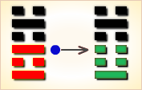
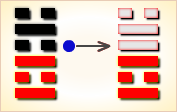
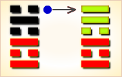

周易第63卦_既济卦(水火既济)_坎上离下
周易第63卦详解
既济卦原文
既济。亨，小利贞，初吉终乱。
象曰：水在火上，既济。君子以思患而预防之。
白话文解释
既济卦：亨通。这是小见吉利的贞卜。起初吉利，最后将发生变故。
《象辞》说：本卦上卦为坎，坎为水；下卦为离，离为火。水上火下，水浇火熄，是既济之卦的卦象。君子观此卦象，从而有备于无患之时，防范于未然之际。
《断易天机》解
既济卦坎上离下，为坎宫三世卦。既济就是说已经成功，事情已经摆平。但还需谨慎，当心物极必反。
北宋易学家邵雍解
济助有成，坚忍自重；由大而小，确保盛运。
得此卦者，事业有成，成功之象，但谨防盛极必衰，宜退守为吉，再进则凶。
台湾国学大儒傅佩荣解
时运：盛极必衰，谨防后患。
财运：及时出手，可得利润。
家宅：大厦可居；百年好合。
身体：大病初愈，仍需自理。
传统解卦
这个卦是异卦（下离上坎）相叠。坎为水，离为火，水火相交，水在火上，水势压倒火势，救火大功告成。既，已经；济，成也。既济就是事情已经成功，但终将发生变故。
大象：坎水在离火之上，水性下注，火势上炎，水火相济，完成之意。
运势：名利双收，成功之象，但须防物极必反，初吉后凶。
事业：处在顺利和兴旺的阶段，甚至大功已经告成。如何才能保住这种势头，是问题的关键。必须认识盛极将衰的真理，思患预防，防微杜渐，有备可无患。同时，一定要密切注意形势，抓住有利时机，继续奋发向上，推动事业发展。
经商：由于市场形势有利，已经赚得许多，但同时也预示着危机的随时出现。因此，务必小心在意，事未到，先预防，终日提防戒惧。同时，认真观察市场的变化，随时转向，开拓新市场。
求名：个人追求名利的基本条件已经具备。必须防止因此而变得僵化和保守，以致功亏一篑，半途而废。
婚恋：起初顺利，中途会出现挫折。
决策：各方面条件都很好，环境又有利于成长。但因此反而会使自己满足，停止前进，甚至变得颓废，趋向没落。一定要不断刻苦努力，保持谦虚美德，常怀不安之心，防止不测事件发生。
台湾张铭仁解卦
既济：表示水火阴阳调和，一时平安和乐之象。水火本相克，因一时环境或人事所影响，而暂时相安无事，但终非常久之象，必有所冲克而败。
解释：已经得到利益，不可贪得无厌。
特性：物质丰盛，但精神易空虚，外华内虚，交际广，知心少，心思细腻，多愁善感，喜宁静的生活。
运势：功名双收。极盛之时，但须知物极必反，宜退守为吉，再进则凶。但得此卦者，皆有因一时顺利而忘本，大意失荆州，终有人不和、心迷乱之象。
家运：生在富家之象，受祖上恩泽而不知珍惜者多，终而破运之兆。
疾病：短期虽有好转，但好景不常。
胎孕：不安。
子女：初时幸福，长大后与双亲不和，慎之。
周转：短期可成，长期无望。
买卖：中途变卦不利。故初时见好就收，莫贪心拖延，否则不利。
等人：已中途折回，不必再等。
寻人：若是常出走之人，小时自回，长大再出走，难寻。甚或不回。
失物：应可寻回。
外出：利于出行，途中需注意安全。
考试：实力有，但需视考期之日吉凶而定，小吉。
诉讼：有理说不清，仍须把握最有利时机争取主动，迟则反见凶。
求事：紧急可，不宜长久。
改行：不宜。
开业：开业者最好慎重考虑，因此卦象好景不常。
周易第63卦初九爻详解
初九爻辞
初九。曳其轮，濡其尾，无咎。
象曰：曳其轮，义无咎也。
白话文解释
初九：提着腰带过河，打湿了衣尾。没有大问题。
《象辞》说：提着腰带过河，打湿了衣尾，理应无灾难。
北宋易学家邵雍解
平：得此爻者，时运未到，欲动未动，安保无虞。做官的有职未受，有位未登。
台湾国学大儒傅佩荣解
时运：奋勉有加，可以无咎。
财运：暂时稳住，将可脱困。
家宅：可以安居；初聘为吉。
身体：初病可治。
周易第63卦六二爻详解
六二爻辞
六二。妇丧其茀，勿逐，七日得。
象曰：七日得，以中道也。
白话文解释
六二：妇人丢失了头巾，不用寻找，七日内可以不寻而得。
《象辞》说：七日内可以不寻而得，因为六二阴爻居阴位，位象既得，失物将还。
北宋易学家邵雍解
平：得此爻者，先难后易，做官的有先逆后顺之美。
台湾国学大儒傅佩荣解
时运：不计小利，得成大功。
财运：失而复得，不必担心。
家宅：七年可还；将可团聚。
身体：七日可愈。
周易第63卦九三爻详解
九三爻辞
九三。高宗伐鬼方，三年克之。小人勿用。
象曰：三年克之，惫也。
白话文解释
九三：高宗讨伐鬼方，费时三年才打败它。筮遇此爻，不可重用小人。
《象辞》说：费时三年才打败它，因为鬼方这时已疲惫不堪。
北宋易学家邵雍解
凶：得此爻者，有结怨争诉之损。做官的多差遣征伐之举。
台湾国学大儒傅佩荣解
时运：努力工作，所谋必成。
财运：数年经营，才可获利。
家宅：三年后居；三年可婚。
身体：一时无恙，只保三年。
九三变卦

九三爻动变得周易第3卦：水雷屯。这个卦是异卦（下震上坎）相叠，震为雷，喻动；坎为雨，喻险。雷雨交加，险象丛生，环境恶劣。“屯”原指植物萌生大地，万物始生，充满艰难险阻，然而顺时应运，必欣欣向荣。
周易第63卦六四爻详解
六四爻辞
六四。繻有衣袽，终日戒。
象曰：终日戒，有所疑也。
白话文解释
六四：撑着用败絮塞罅漏的船，整日里提心吊胆。
《象辞》说：整日里提心吊胆，说明心中疑虑重重。
北宋易学家邵雍解
平：得此爻者，时运平平，有备则无患。做官的须做好预防，则爵禄稳固。
台湾国学大儒傅佩荣解
时运：处顺思困，谨慎为宜。
财运：经营漏洞，早些修补。
家宅：修正屋宇；珍惜情谊。
身体：年老体弱。
六四变卦

六四爻动变得周易第49卦：泽火革。这个卦是异卦（下离上兑）相叠。离为火、兑为泽，泽内有水。水在上而下浇，火在下而上升。火旺水干，水大火熄。二者相生亦相克，必然出现变革。变革是宇宙的基本规律。
周易第63卦九五爻详解
九五爻辞
九五。东邻杀牛，不如西郊之禴祭，实受其福。
象曰：东邻杀牛，不如西邻之时也。实受其福，吉大来也。
白话文解释
九五：殷人杀牛厚祭鬼神，不如周人簿祭鬼神，周人倒是得到鬼神的福佑。
《象辞》说：殷人杀牛厚祭鬼神，不如周人薄祭鬼神的用意美善，周人得到鬼神的福佑，将有重大的吉庆降临。
北宋易学家邵雍解
吉：得此爻者，近谋有实，远谋多虚，不利东方，利于西方。
台湾国学大儒傅佩荣解
时运：持盈保泰，吉凶自取。
财运：奢不如俭，实获其利。
家宅：向西吉宅；两邻订亲。
身体：最好祷告。

周易第63卦上六爻详解
上六爻辞
上六。濡其首，厉。
象曰：濡其首厉，何可久也。
白话文解释
上六：涉水过河，水拍湿其头部，危险。
《象辞》说：水拍湿其头部，怎能呆很久的时间呢？
北宋易学家邵雍解
凶：得此爻者，小人侵扰，坐船者，防溺水之灾。做官的有过刚则折之忧。
台湾国学大儒傅佩荣解
时运：好运已过，小心危险。
财运：首次买卖，必难获利。
家宅：不利长房；元配有灾。
身体：头部有疾，危险可知。
上六变卦

上六爻动变得周易第37卦：风火家人。这个卦是异卦（下离上巽）相叠。离为火；巽为风。火使热气上升，成为风。一切事物皆应以内在为本，然后伸延到外。发生于内，形成于外。喻先治家而后治天下，家道正，天下安乐。